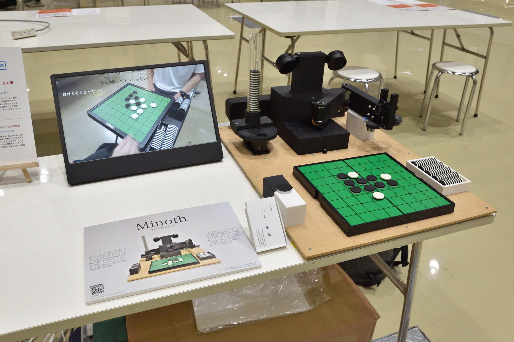

Maker Faire Tokyo 2025
Othello Robot, Pet Robot, Luminous Clothes, etc. (2025)
We exhibited as University of Tsukuba Entertainment Computing Laboratory.
My exhibit is the Othello Teaching Robot "Minoth".



Details
Official Page: Maker Faire Tokyo 2025
Date: 2025/10/4 (Sat) 12:00-18:00, 2025/10/5 (Sun) 10:00-17:00
Venue: Tokyo Big Sight, West Hall 4 (3-11-1 Ariake, Koto-ku, Tokyo)
Admission: [Advance] Adult 1,400 yen / 18 and under 500 yen, [Same day] Adult 1,800 yen / 18 and under 700 yen
Exhibitor Page